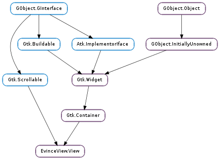

| static | new() |
| autoscroll_start() | |
| autoscroll_stop() | |
| begin_add_annotation(annot_type) | |
| can_zoom_in() | |
| can_zoom_out() | |
| cancel_add_annotation() | |
| copy() | |
| copy_link_address(action) | |
| find_cancel() | |
| find_next() | |
| find_previous() | |
| find_search_changed() | |
| find_set_highlight_search(value) | |
| find_set_result(page, result) | |
| find_started(job) | |
| focus_annotation(annot_mapping) | |
| get_has_selection() | |
| get_page_extents(page, page_area, border) | |
| handle_link(link) | |
| hide_cursor() | |
| highlight_forward_search(link) | |
| is_caret_navigation_enabled() | |
| is_loading() | |
| next_page() | |
| previous_page() | |
| reload() | |
| scroll(scroll, horizontal) | |
| select_all() | |
| set_caret_cursor_position(page, offset) | |
| set_caret_navigation_enabled(enabled) | |
| set_loading(loading) | |
| set_model(model) | |
| set_page_cache_size(cache_size) | |
| show_cursor() | |
| supports_caret_navigation() | |
| zoom_in() | |
| zoom_out() |
| Name | Type | Flags | Description |
|---|---|---|---|
| can-zoom-in | bool | r | Whether the view can be zoomed in further |
| can-zoom-out | bool | r | Whether the view can be zoomed out further |
| is-loading | bool | r | Whether the view is loading |
| Name | Parameters | Return | Description |
|---|---|---|---|
| annot-added | EvinceDocument.Annotation | ||
| cursor-moved | int, int | ||
| external-link | GObject.Object | ||
| handle-link | GObject.Object | ||
| layers-changed | |||
| move-cursor | Gtk.MovementStep, int, bool | bool | |
| popup | int | ||
| scroll | Gtk.ScrollType, Gtk.Orientation | ||
| selection-changed | |||
| sync-source | int |
Bases: Gtk.Container, Gtk.Scrollable
| Return type: | Gtk.Widget |
|---|
| Parameters: | annot_type (EvinceDocument.AnnotationType) – |
|---|
| Parameters: | action (EvinceDocument.LinkAction) – |
|---|
| Parameters: | job (EvinceView.JobFind) – |
|---|
| Parameters: | annot_mapping (EvinceDocument.Mapping) – |
|---|
| Parameters: |
|
|---|---|
| Return type: |
| Parameters: | link (EvinceDocument.Link) – |
|---|
| Parameters: | link (EvinceDocument.SourceLink) – |
|---|
| Return type: | bool |
|---|
| Parameters: |
|
|---|
| Parameters: | enabled (bool) – whether to enable caret navigation mode |
|---|
Enables or disables caret navigation mode for the document.
| Parameters: | model (EvinceView.DocumentModel) – |
|---|
| Parameters: | cache_size (int) – size in bytes |
|---|
Sets the maximum size in bytes that will be used to cache rendered pages. Use 0 to disable caching rendered pages.
Note that this limit doesn’t affect the current visible page range, which will always be rendered. In order to limit the total memory used you have to use EvinceView.DocumentModel.set_max_scale () too.
| Returns: | whether the document supports caret navigation |
|---|---|
| Return type: | bool |